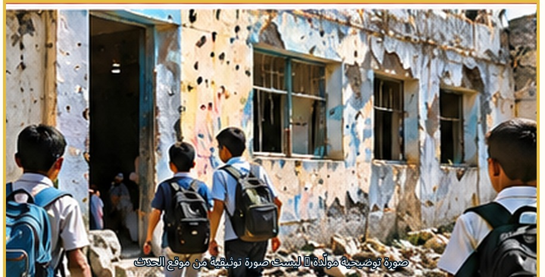
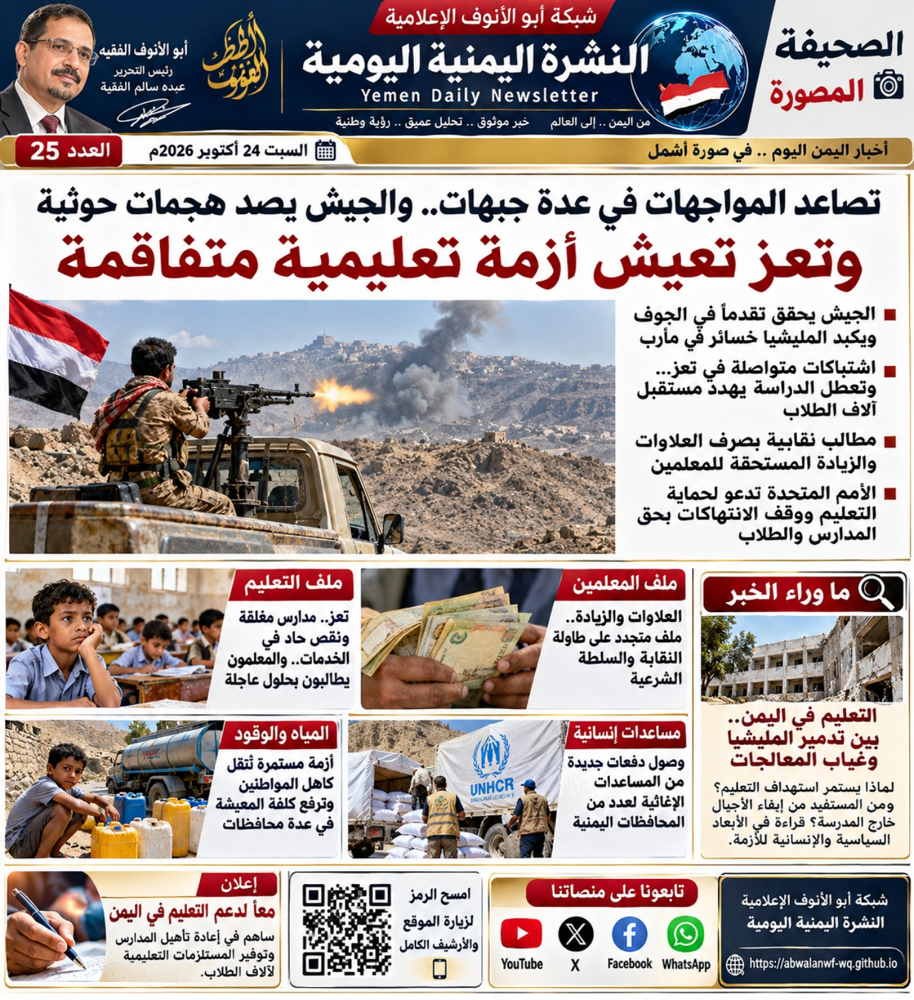

أزمة إنسانية تتفاقم ومخاوف على المياه والغذاء والخدمات الصحية

المشهد الإنساني
تتواصل التطورات الميدانية والإنسانية في اليمن، ويتصدر ملف النزوح مع تصاعد المواجهات وصعوبة وصول الإمدادات الأساسية. وتشير تقارير حديثة إلى تراجع إمدادات المياه ونقص الوقود اللازم لتشغيل مرافق المياه والصحة، وارتفاع الضغوط على الأسر والمرافق الطبية.
وتبرز الحاجة إلى تسهيل وصول المساعدات وحماية المدنيين والبنية التحتية المدنية.
أبرز الأخبار والتقارير
الملف الإنساني والتعليم
نحو 260 ألف نازح منذ أغسطس وفق تقديرات أممية. وأورد تقرير 22 أكتوبر التحقق من 251 ضحية مدنية، بينهم 57 قتيلاً و194 مصاباً. الأرقام مرتبطة بتاريخ التقرير وليست حصيلة نهائية.
التطورات الميدانية
تقارير عن مواجهات جديدة في جبهة الأقروض بتعز، نقلت معلومات عن تقدم ميداني وخسائر منسوبة إلى مصادر عسكرية حكومية؛ والتفاصيل بحاجة إلى تحقق مستقل.
تقارير إقليمية
تقارير عن غارات في صعدة وتعز، واعتراض صاروخ باليستي ومسيّرة وفق إعلان المتحدث باسم قوات التحالف. المعلومات منسوبة إلى مصدر إعلانها.

السياسة والعلاقات الدولية
دعوة من البرلمان الأوروبي إلى إدراج الحوثيين على قائمة الإرهاب؛ وهي دعوة برلمانية وليست قراراً نهائياً بالإدراج.
تحركات دبلوماسية
دعوات أوروبية للضغط من أجل فتح الطرق الرئيسية في تعز وتسهيل تنقل المدنيين ووصول المساعدات ونقل المرضى والجرحى.
الاقتصاد والخدمات
المياه والوقود في صدارة الضغوط المعيشية في تعز، مع انعكاس نقص الإمدادات على تشغيل مرافق المياه والصحة وارتفاع الأعباء على الأسر.
التعليم والمعلمون
مشروعات لدعم التعليم في 11 محافظة يمنية، ونحو 60 مشروعاً ومبادرة وفق وكالة الأنباء السعودية المنشورة يوم 22 أكتوبر.
الطقس والسلامة
تحذيرات من أمطار رعدية وسيول محتملة خلال الفترة 22–25 أكتوبر، وفق ما نقلته وكالة سبأ.
من المشهد الإعلامي
صورة من استوديو إعلامي ضمن المواد المصوّرة المرسلة، أُدرجت في موضع مستقل حتى لا تتزاحم مع الخبر الرئيسي أو فقرة التحليل.
ما وراء الخبر
تعز بين التصعيد الميداني والضغط الإنساني
لا تقتصر أهمية ما يحدث في تعز على المواجهات الميدانية؛ فالأزمة تمس المياه والغذاء والوقود والخدمات الصحية، فيما تزيد صعوبة الوصول إلى الإمدادات الضغط على السكان والنازحين.
البعد الإنساني: ضمان وصول المياه والغذاء والدواء والوقود إلى السكان والمرافق الحيوية.
البعد الاقتصادي: الحد من آثار تعطل الطرق والإمدادات على الأسعار والقدرة الشرائية للأسر.
البعد السياسي: تحويل المطالب الدولية بفتح الطرق إلى خطوات عملية تضمن حرية التنقل ووصول المساعدات.
تنويه: تم تصحيح مسارات الصور لتطابق أسماء الملفات الموجودة في جذر مستودع abu-al-anouf. يجب أن تكون ملفات الصور الخمسة في جذر المستودع نفسه بجانب هذا الملف.